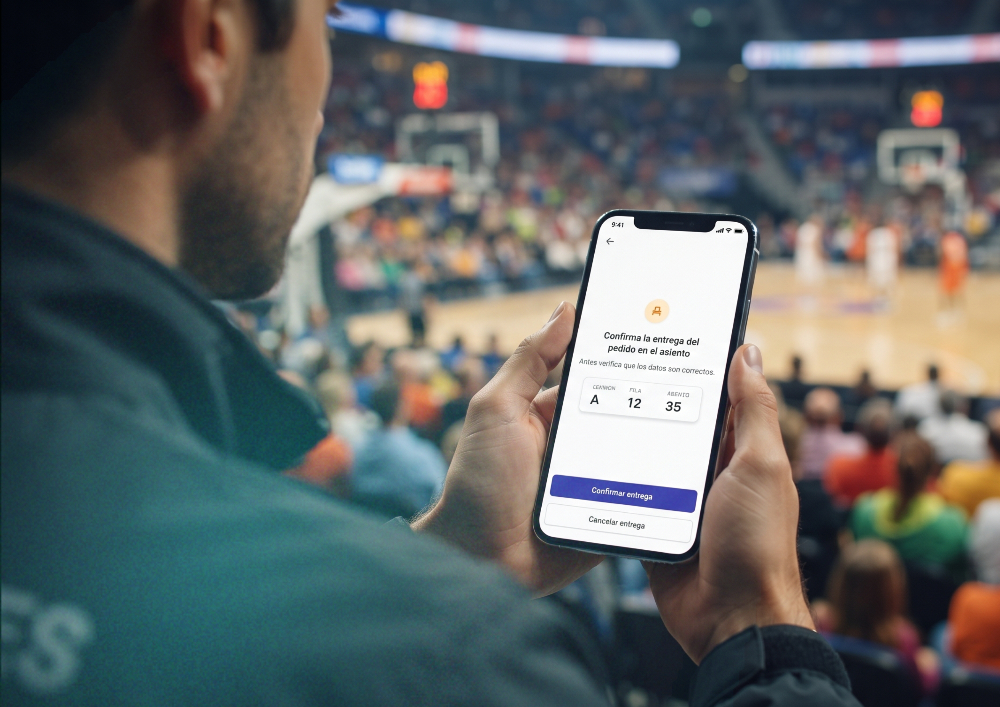
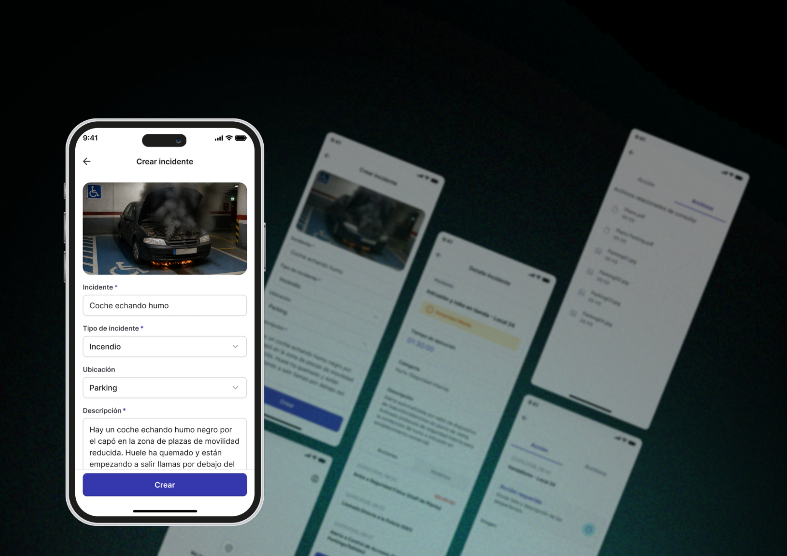
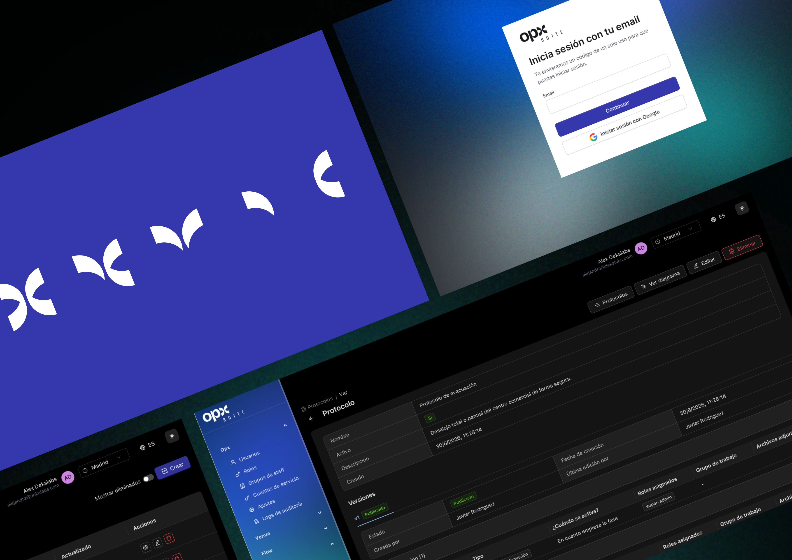
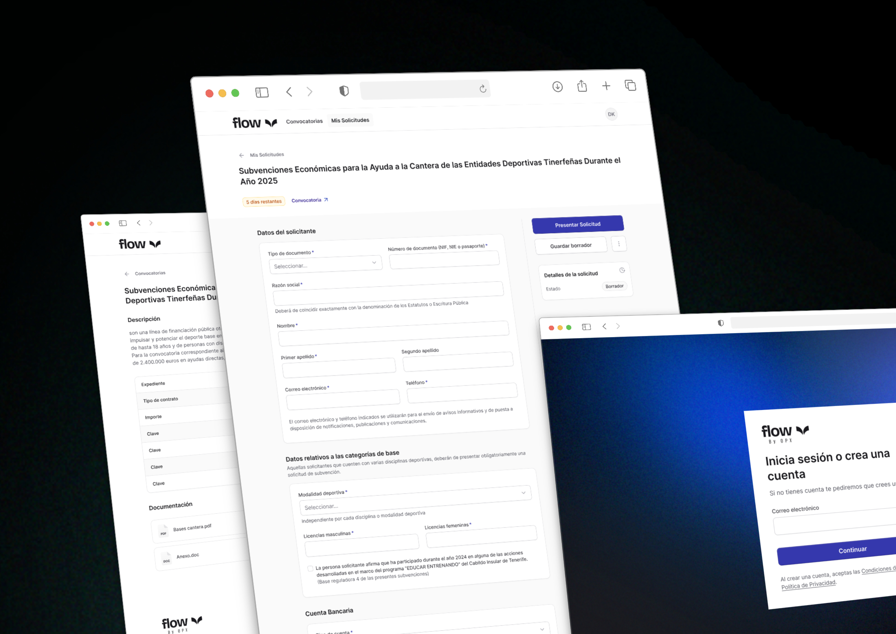
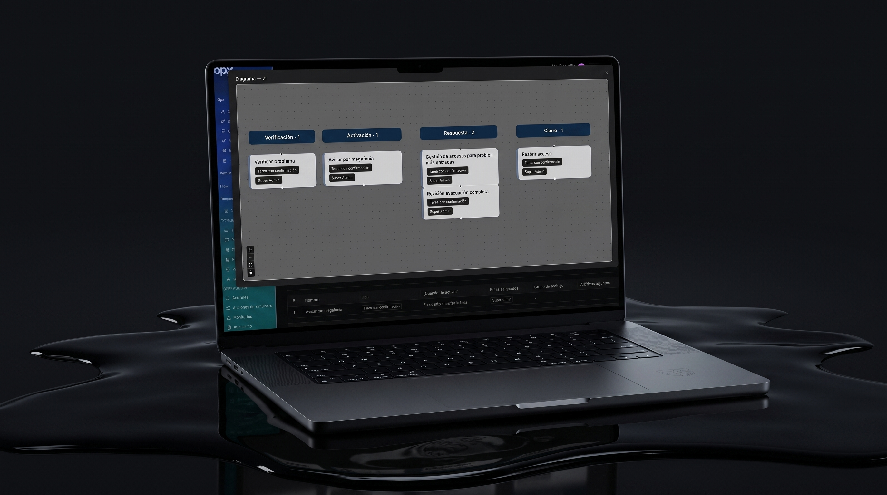

¿Qué gestionamos?
Activos, espacios, infraestructuras.
Una suite operativa que conecta espacios, procesos, incidentes y aprendizajepara que tu equipo decida con contexto y actúe con control.
Cuando todo está conectado, ninguna decisión ocurre de forma aislada. OPX nace para aportar claridad, coordinación y control en operaciones donde fallar no es una opción.
Los entornos operativos evolucionan más rápidoque la capacidad de adaptación de las organizaciones.
Cada decisión arrastra múltiples actores,restricciones y efectos en cadena.
Las disrupciones ya no son excepciones:son parte del día a día.
Sin estructura, el aprendizaje llega tardey las mejoras nunca se consolidan.
Cuatro preguntas. Una sola lógica operativa. OPX ordena la complejidad alrededor de lo que gestionas, cómo operas, cómo respondes y cómo aprende tu organización.

Activos, espacios, infraestructuras.

Procesos, flujos, reglas de decisión.

Incidentes, protocolos, coordinación.

Análisis, patrones, mejora continua.
Menos ruido. Más contexto para decidir. La IA en OPX conecta datos, señales y procesos. Detecta patrones y riesgos. Resalta lo relevante. Apoya mejores decisiones humanas.
«La IA nunca sustituye a las personas. La IA estructura la complejidad para que las personas mantengan el control.»
Datos, señales y procesos en una visión coherente.
Patrones y riesgos antes de que escalen.
Mejores decisiones humanas con contexto y claridad.

Cuatro productos. Un ciclo de principio a fin. Cada producto resuelve una parte de la operación. Juntos convierten señales dispersas en decisiones trazables y aprendizaje continuo.
Qué gestionas
Optimiza la visibilidad y el control sobre activos y espacios. Detecta patrones de uso, anticipa riesgos operativos y apoya mejores decisiones sobre activos.
«Claridad sobre lo que gestionas.»
Visitar OPX VenueCómo lo gestionas
Optimiza procesos y flujos de decisión. Identifica cuellos de botella e inconsistencias, resalta fortalezas y debilidades y explica evaluaciones complejas.
«Estructura para decidir mejor.»
Visitar OPX FlowCómo reaccionas
Optimiza la preparación y la respuesta coordinada ante incidentes. Monitoriza señales, detecta escenarios de riesgo elevado y apoya respuestas oportunas.
«Control cuando más importa.»
Web del producto próximamenteCómo aprendes
Optimiza el aprendizaje y la mejora continua. Analiza operaciones e incidentes históricos, detecta patrones recurrentes y alimenta mejoras futuras.
«Aprender para operar mejor.»
Web del producto próximamenteUna noche de evento, el ciclo completo. Un escenario realista y ficticio —el recinto Arena Cierzo durante un concierto con entradas agotadas— recorre los cuatro productos en 48 minutos.
El panel operativo de OPX Venue registra un 87 % de saturación en la zona norte, flujo alto en los accesos principales y 2 incidencias activas.
OPX Response activa el protocolo de saturación: avisa a seguridad y a accesos con la instrucción y el contexto necesarios para ejecutarla.
El equipo confirma cada instrucción: se refuerza la señalización y se prepara la redirección del flujo hacia los accesos secundarios.
OPX Flow registra la evaluación con criterios explícitos: la opción elegida, la descartada y el porqué quedan trazados para la auditoría posterior.
Aprobada Redirigir el flujo a los accesos secundarios
Mantiene la operación con el menor impacto para el público.
Descartada Cerrar temporalmente la zona norte
Interrumpe la experiencia y desplaza el problema a las zonas contiguas.
Recreación del panel de decisión de OPX Flow.
La telemetría del recinto confirma el efecto de la medida: la zona norte baja del 87 % al 63 % sin nuevas incidencias.
OPX Insight registra el episodio, lo relaciona con eventos anteriores y propone ajustar la señalización para el próximo evento con aforo completo.
Ve OPX trabajando sobre un escenario como el tuyo. Cuéntanos qué gestionas y dónde se concentra hoy la complejidad. Prepararemos una demostración centrada en tu operativa.
La tecnología ordena la complejidad. Tu equipo mantiene el control:
Solicitar demostración